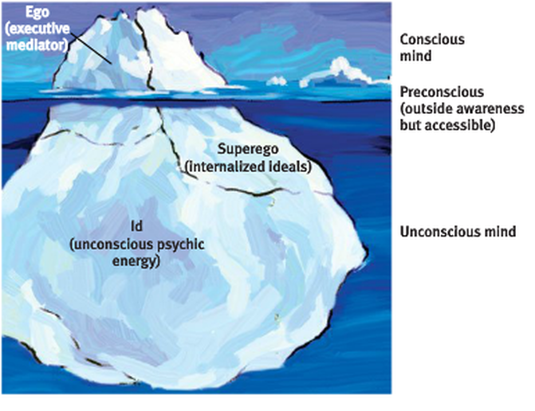

This stuff is pretty amazing
Today I learned about the super-ego that was a concept developed by Sigmund Freud
The super-ego is responsibe for self talk that keeps you in check. It can lead to self doubt and keep you from learning and performing optimally if you let it overtake your thoughts.
Eventhough it may allow for a healthy reality check. Generally, if you are optimistic about learning you can be optimistic and critical at the same time. Rather than negatively critical. Negative criticisim and thinking about negative consequences of failing are powerful self talk , super-ego activities that can harm your performance and happiness.
When I talked to my engineering empathy activity partner I discovered that our self talk super ego is really a part of who we are. All of our hangups and inner demons developed through our life experiences, our early and late lives at school, home and work.
The exercise was to listen to someone else's super-ego and to understand where they are coming from. Everyone has negative self thought. I saw a deep window into my partners feelings. I empathized with their struggles. From listening to this powerful negative self talk we can acknoledge it and make attempts to mediate and let go and free ourselves of these thoughts. I'm glad I could share these experiences with my partner.